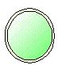
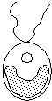
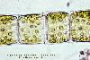
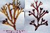
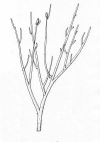
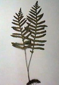
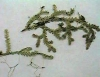
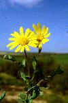

| Niveles | Características | Logros | Hace... millones de años |
| 1  |
Algas procariotas | Membrana y pared celular Clorofila a |
3.000 |
| 2  |
Flagelados (Protofitas) | Núcleo y orgánulos | 2.000 |
| 3  |
Algas filamentosas (talos sencillos) | Encadenamiento celular y diferenciación polar | 1.000 |
| 4  |
Algas parenquimáticas (talos complejos) | Parénquima y órganos reproductores | 600 |
| 5  |
Primeras plantas terrestres (Rhyniales) | Epidermis, vasos, etc. Embrión gonotrófico |
400 |
| 6  |
Helechos isospóreos | Diferenciación de órganos vegetativos | 380 |
| 7  |
Helechos heterospóreos | Reducción del gametofito Grano de polen Macrospora |
360 |
| 8 |
Gimnospermas primitivas | Semilla | 360 |
| 9 |
Gimnospermas avanzadas | Fecundación mediante tubo polínico | 285 |
| 10  |
Angiospermas (plantas con flores) | Flor Ovario Fruto |
135 |